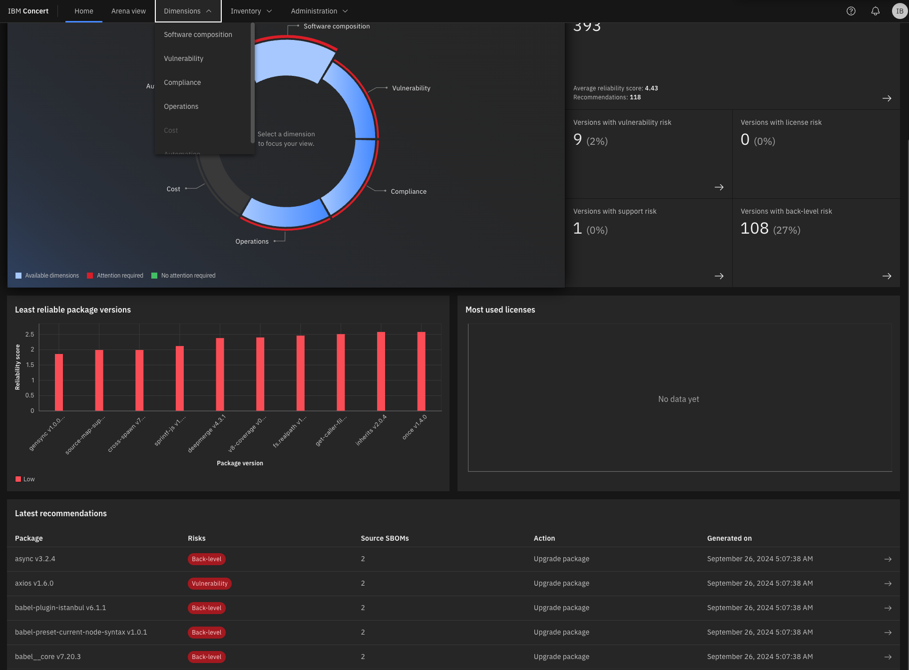
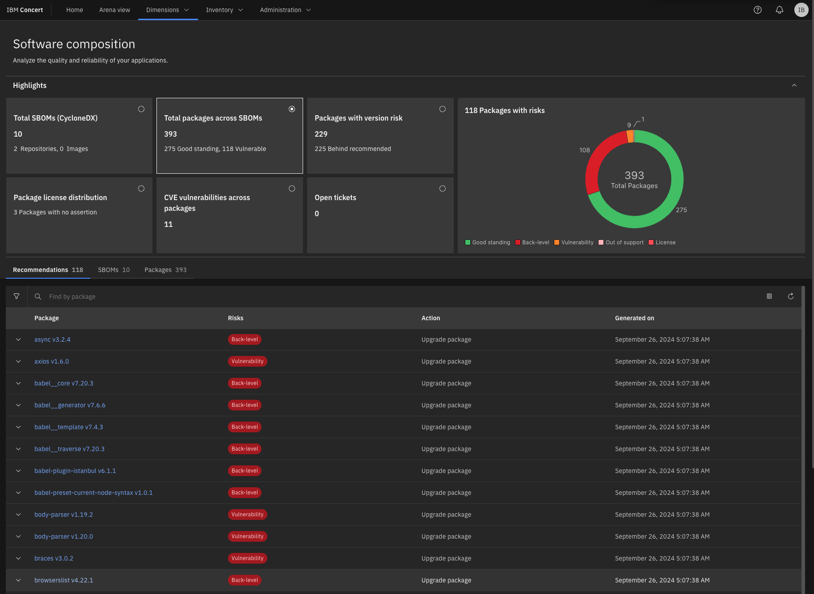
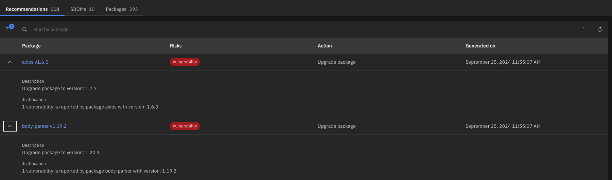
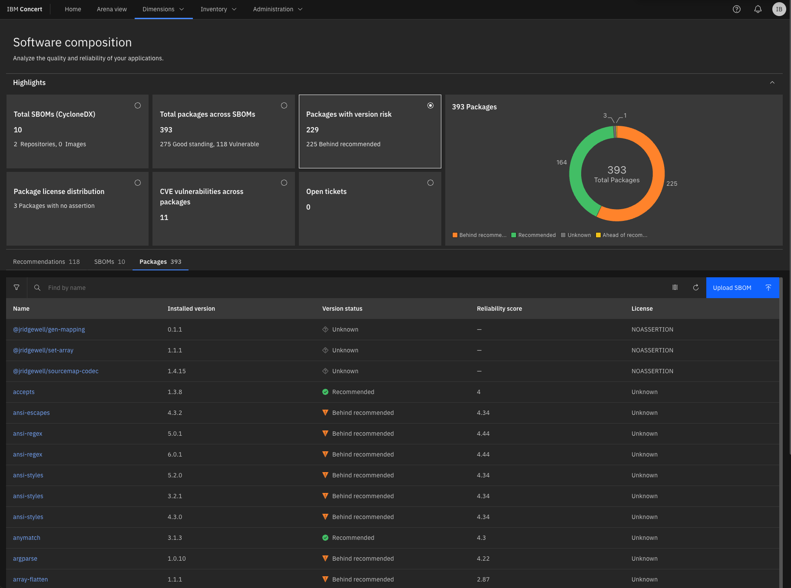
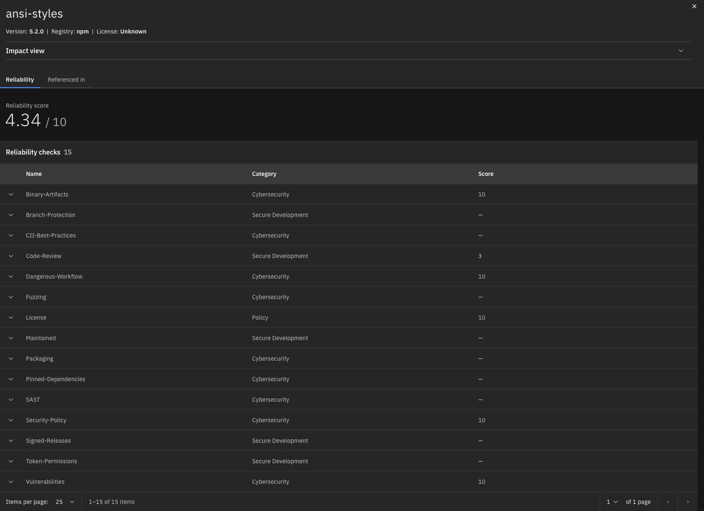

2 - Software composition analysis and details: Drilling down into individual security vulnerabilities, license compliance, and versioning
| 2.1 | Examine recommendations in the Dimension view | | :— | :— |
| Action 2.1.1 | Click Dimensions and select Software composition.  |
| Action 2.1.2 | The Software composition detail view will appear:  |
| Narration | The Software Composition detail view in IBM Concert offers a clear summary of the 393 total packages and associated risks, including the 118 flagged packages mentioned earlier. This view builds on previous discussions of key components like axios v1.6.0 and body-parser v1.19.2, emphasizing the need for immediate updates. It provides teams with a streamlined overview to prioritize remediation efforts and maintain application security without repeating details. Upcoming sections will further explore critical risks and actions. |
| Action 2.1.3 | Expand the sections for axios v1.6.0 and body-parser v1.19.2 to see the additional details:  |
| Narration | Detailed insights into axios v1.6.0 and body-parser v1.19.2 are provided, both flagged with critical Vulnerability risks. Clear upgrade actions to secure versions, such as upgrading axios to v1.7.7 and body-parser to v1.20.3, ensure the team can swiftly address these security gaps. The visual cues make it easy to spot high-priority risks, streamlining the remediation process. This direct, actionable guidance empowers teams to quickly resolve vulnerabilities, saving time and maintaining robust security across applications. |
| 2.2 | Examine packages lineage in the Dimension view | | :— | :— |
| Action 2.2.1 | Click over Packages under the main dashboard.  |
| Narration | As the team prepares for the application launch, attention turns to the 225 packages flagged as Behind recommended, such as ansi-regex and ansi-styles, which may introduce security risks. With Concert’s ability to surface key insights like version status and reliability scores, the team can prioritize which components need immediate attention. Concert provides the crucial visibility needed to assess and act on these insights, guiding the team to focus on high-risk areas. By identifying outdated dependencies, it allows teams to make informed decisions, ensuring the application remains secure and ready for release. |
| Action 2.2.2 | Click ansi-styles v5.2.0. |
| Action 2.2.3 | The following pop-up window will appear:  |
| Narration | With a reliability score of 4.34/10, ansi-styles v5.2.0 shows a mix of strengths and areas for improvement. While it scores high in critical categories like Binary-Artifacts, Dangerous-Workflow, License, and Vulnerabilities, securing perfect 10s in these areas, it falls short in development practices like Branch-Protection and Code-Review. These gaps lower the overall score and highlight the need for better development safeguards. The recommendation is clear: by addressing these weaknesses, the package can become more robust and secure for production use. Diving deeper into the reliability score, the gaps in development practices become more apparent. The lack of branch protection, with a score of 0/10, means risky, unreviewed changes could be merged, while the minimal code review process, scoring just 3/10, leaves room for undetected issues. Additionally, dependencies aren’t pinned to specific versions, adding further risk of introducing unexpected or breaking changes. By focusing on strengthening these areas, the team can significantly enhance the package’s overall reliability, ensuring it’s better prepared for production while building on its existing security strengths. |
| Action 2.2.4 | Click Impact view at the top of the window.  |
| Narration | Clicking on the Impact View for ansi-styles v5.2.0 reveals how the package is connected across the codebase. This visualization shows two source repositories—encoreapp and allegroapp-analytics—that rely on ansi-styles, providing a clear view of where the package is being used. By mapping these dependencies, the team gains insights into how potential issues with this package could impact different parts of the application. This allows for more informed decisions when evaluating risks and planning updates, ensuring that any changes to the package are thoroughly considered across all affected repositories. |
| Narration | With the package’s impact across repositories clear, the next step is to ensure those connections aren’t affected by underlying risks. The team transitions from mapping dependencies in the Impact View to addressing flagged issues by exploring the Recommendations View. Here, actionable insights surface—whether it’s upgrading ansi-styles or resolving vulnerabilities in other key packages. This shift from insight to action allows the team to not just understand where a package fits into the broader codebase but also make targeted improvements, safeguarding the entire application ecosystem. |